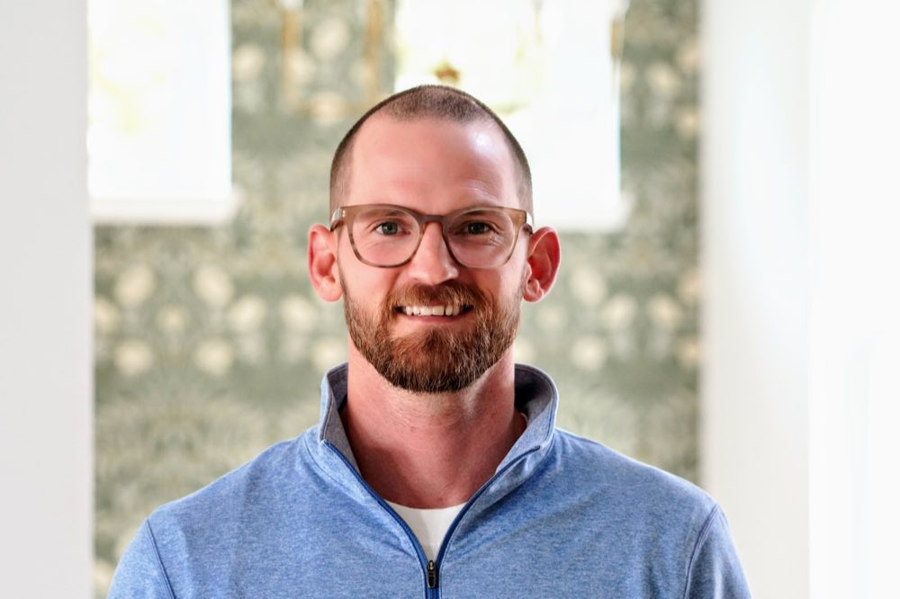

A mentor shaped by ministry, business, fatherhood, and real life.
Dustin Herron founded Genuine Mentoring Co. to offer men a steady voice in seasons where responsibility, pressure, and calling begin to converge.

A grounded voice for the road ahead.
Dustin spent nearly a decade in pastoral ministry at Gateway Church, walking with people through formative seasons of life, faith, pain, growth, and decision. That background still shapes the way he listens, asks questions, and speaks into a man's life.
He is also a husband, father, founder, franchisor, and business owner. He understands what it feels like to carry vision and responsibility at the same time, and he knows the difference between sounding strong and actually becoming anchored.
Genuine Mentoring Co. grew out of that intersection: pastoral wisdom, practical experience, and a desire to help men become steady in the places that matter most.
Not a performance. A presence.
Pastoral wisdom
Nearly a decade of ministry experience, with a posture that is faith-rooted, discerning, and personal.
Founder reality
Firsthand experience building businesses, leading through ambiguity, and carrying responsibility over time.
Relational steadiness
The ability to create space where a man can be honest, think clearly, and leave stronger than he came in.
This is not about being impressive. It is about being genuine.
Some men need counsel from a licensed professional. Some need a business consultant. Some need a peer group. Genuine Mentoring Co. is different. It is for the man who needs a trusted older voice, a steady place to process, and wise conversation that meets him where he actually is.